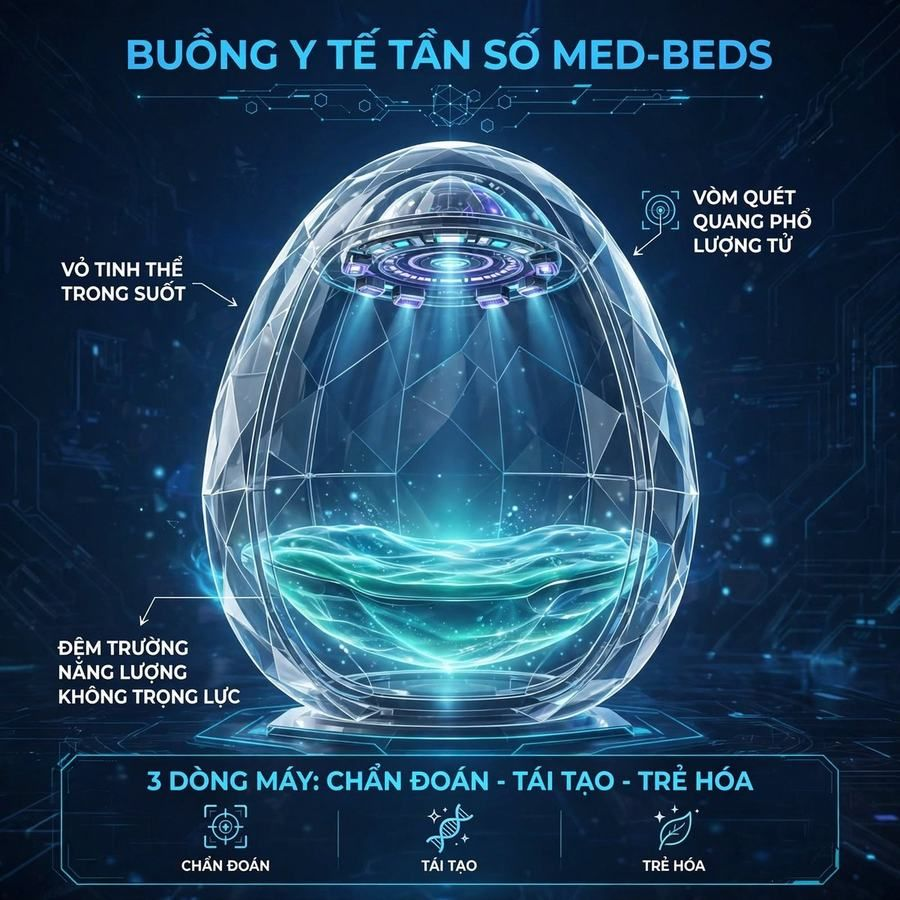
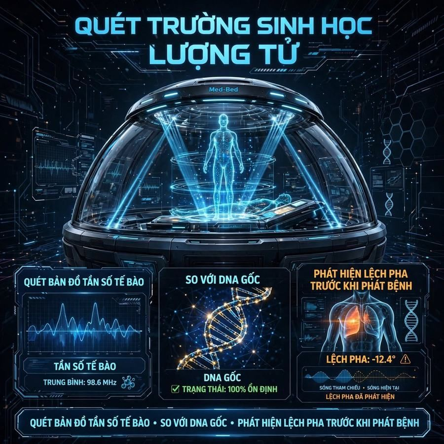
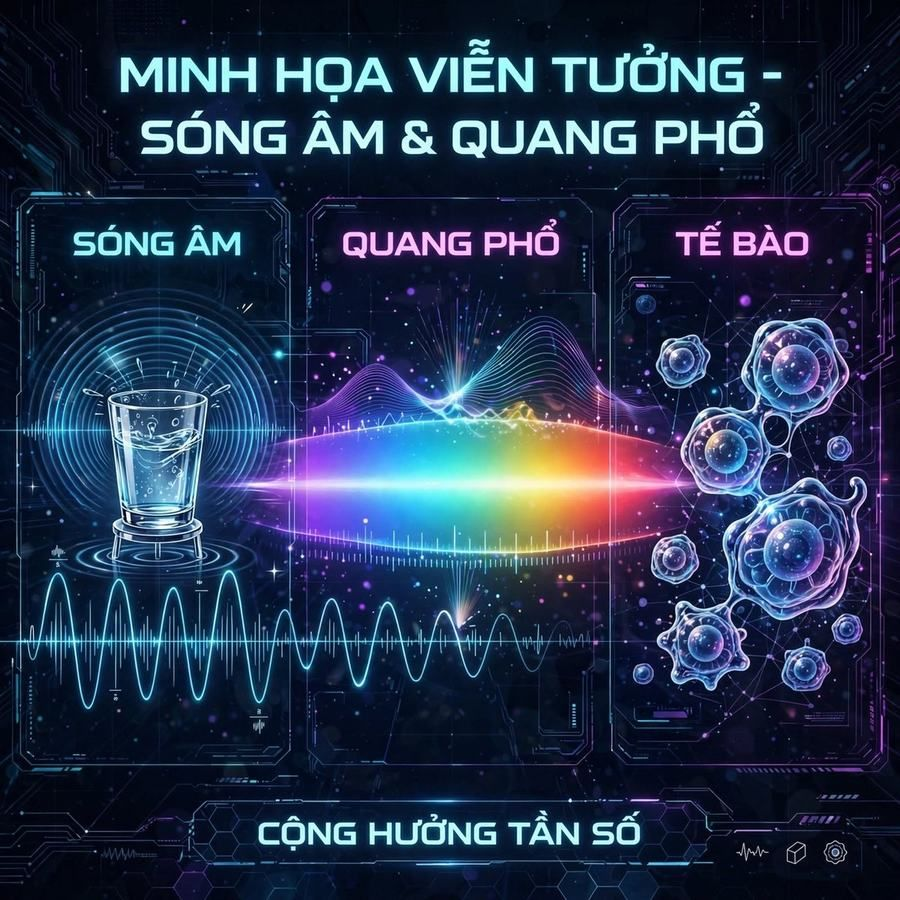
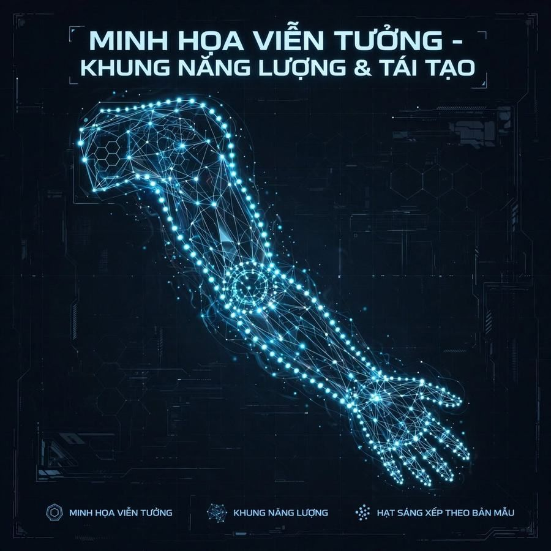
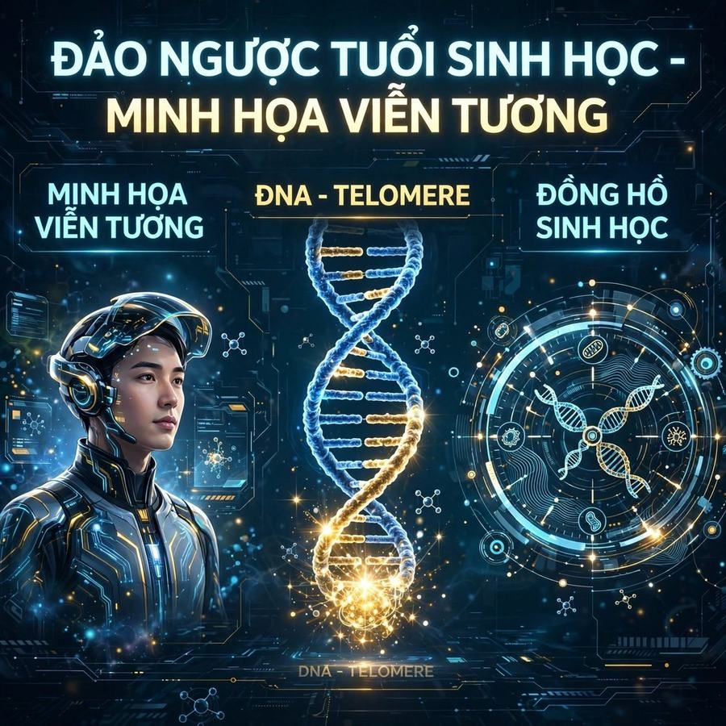
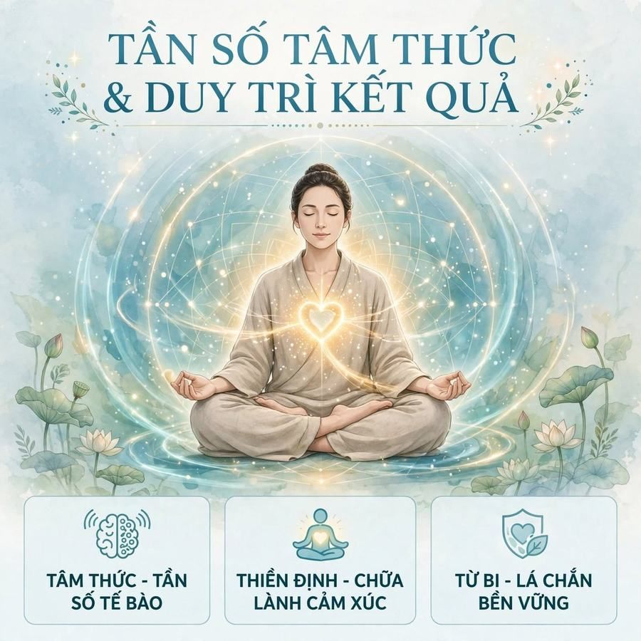
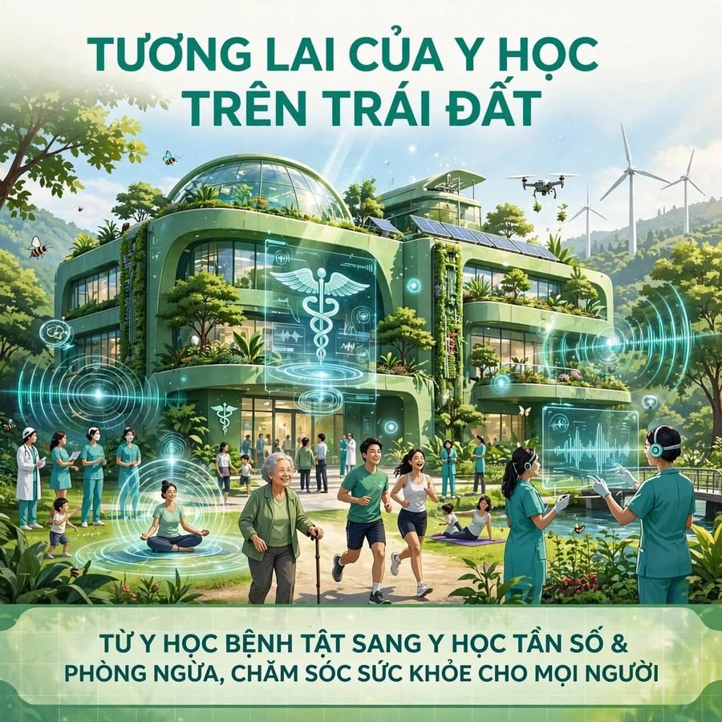

Trang chủ / Chuyên đề 8: Khoa Học & Công Nghệ / Kỳ 73
Chuyên đề 8 · Kỳ 73 / 90
BUỒNG Y TẾ TẦN SỐ MED-BEDS & CÔNG NGHỆ TÁI TẠO SINH HỌC

Bạn đã bao giờ tự hỏi: Liệu có một công nghệ y học nào có thể xóa bỏ hoàn toàn mọi bệnh tật hiểm nghèo, tái tạo lại một cánh tay hay nội tạng đã bị cắt bỏ, và đảo ngược tuổi sinh học của cơ thể trở về thời thanh xuân chỉ trong vài giờ đồng hồ mà không cần đụng đến dao kéo phẫu thuật hay hóa chất độc hại?
Trong nền y học cổ điển của thế giới 3D, việc điều trị bệnh tật chủ yếu dựa trên việc dùng hóa dược để lấn át triệu chứng, hoặc cắt bỏ các bộ phận tổn thương. Phương pháp này thường chỉ giải quyết được phần ngọn vật lý mà hoàn toàn bất lực trước những tổn thương ở dải tần số sinh học và mã di truyền.
Tuy nhiên, đối với các nền văn minh thiên hà tiên tiến, cơ thể sinh học không phải là một cỗ máy cơ học thô tháp, mà là một Trường Năng lượng Lượng tử Mở (Open Quantum Energy Field).
Mọi tế bào, mọi chuỗi DNA và mọi cơ quan trong cơ thể đều vận hành dựa trên một Bản thiết kế Tần số Nguyên thủy (Original Frequency Blueprint). Khi cơ thể bị bệnh tật hay lão hóa, đó chỉ đơn thuần là sự lệch pha tần số dao động.
Và công nghệ Buồng Y tế Tần số (Med-Beds / Holographic Medical Pods) chính là đỉnh cao của sự kết hợp giữa vật lý lượng tử, y học tần số và kỹ thuật tái tạo sinh học đa chiều!
Hãy cùng bước vào thế giới y học vũ trụ để giải mã trọn vẹn nguyên lý vận hành của Buồng Y tế Tần số Med-Beds, Công nghệ Tái tạo Chi/Nội tạng và Đảo ngược Tuổi Sinh học!
✦ ✦ ✦1. BẢN CHẤT VÀ CẤU TẠO CỦA BUỒNG Y TẾ TẦN SỐ MED-BEDS
Buồng Y tế Tần số Med-Bed không phải là một chiếc giường bệnh thông thường hay một máy chụp X-quang/MRI thu nhỏ. Đây là một Hệ thống Phục hồi Sinh học Lượng tử Tự động (Automated Quantum Bio-Restoration Chamber) được tích hợp công nghệ trí tuệ nhân tạo sinh học.
A. Hình thái Kiến trúc và Vật liệu Cấu tạo
- Thân Buồng bằng Hợp kim Tinh thể Tự trong suốt: Buồng Med-Bed thường có hình dáng thuôn dài giống như một viên nhộng hay quả trứng tinh thể mở. Thân buồng được đúc từ hợp kim tinh thể hữu cơ kết hợp với các dải thạch anh lượng tử, có khả năng biến đổi độ trong suốt từ đục sang trong suốt để tạo không gian thư thái cho người nằm bên trong.
- Đệm Trường Năng lượng (Zero-Gravity Acoustic Mattress): Bề mặt đệm nằm được làm từ chất gel sinh học mềm mại tự điều chỉnh phom cơ thể. Đệm này không chỉ hỗ trợ nâng đỡ cột sống ở trạng thái trọng lực bằng không (Zero-Gravity) mà còn là một mặt loa vi mô phát ra các dải sóng âm tần số siêu nhẹ đi thẳng vào hệ thống kinh mạch.
- Mái Vòm Quét Quang phổ Lượng tử (Holographic Medical Canopy): Phía trên buồng là một vòm kính chứa hàng ngàn cảm biến quang học, nguồn phát tia laser năng lượng thấp, máy chiếu ảnh ba chiều và hệ thống phát trường từ trường plasma xoáy.
B. Ba Dòng Máy Med-Beds Phổ Biến trong Vũ Trụ
- Buồng Chẩn đoán & Chữa lành Tần số (Holographic Healing Bed): Dành cho việc chữa lành các tổn thương thần kinh, cân bằng hệ thống nội tiết, triệt tiêu vi khuẩn/virus và chữa lành các tổn thương cảm xúc trong trường khí chất.
- Buồng Tái tạo Sinh học & Sửa chữa DNA (Regeneration Bed): Dành cho các ca chấn thương nặng, tái tạo các chi bị đứt rời, mọc lại nội tạng bị suy hoái và phục hồi các chuỗi DNA bị đột biến.
- Buồng Đảo ngược Tuổi Sinh học (Age Regression & Re-atomization Bed): Dành cho việc trẻ hóa tế bào, tái cấu trúc nguyên tử và kéo dài tuổi thọ sinh học, thường được sử dụng trong các chương trình du hành không gian dài hạn.

2. NGUYÊN LÝ CHẨN ĐOÁN: QUÉT TRƯỜNG SINH HỌC LƯỢNG TỬ (QUANTUM BIO-SCANNING)
Trước khi tiến hành bất kỳ ca điều trị hay tái tạo nào, buồng Med-Bed thực hiện một quy trình chẩn đoán toàn diện kéo dài chưa đầy vài phút — nhưng mức độ chi tiết thì vượt xa tất cả các thiết bị y tế hiện đại nhất trên Trái Đất.
A. Quét Mã Bản đồ Tần số Tế bào (Cellular Frequency Mapping)
- Khác với các thiết bị 3D chỉ chụp lại hình ảnh cấu trúc vật lý thô, mái vòm của Med-Bed phát ra dải sóng năng lượng quét trọn vẹn Trường Quang phổ Sinh học (Bio-Photon Field) của bệnh nhân.
- Máy tính lượng tử trên Med-Bed sẽ phân tích dải tần số dao động của từng tế bào, từng mạch máu, từng nơ-rôn thần kinh và từng nốt luân xa.
- Nó so sánh dải tần số hiện tại của bệnh nhân với Bản thiết kế Di truyền Nguyên thủy (Original DNA Blueprint) được lưu trữ trong thư viện dữ liệu lượng tử của buồng.
B. Phát hiện Tận gốc Nguyên nhân Bệnh tật
- Med-Bed không chỉ tìm thấy các khối u hay tổn thương vật lý đã phát tác. Nó phát hiện được những vùng lệch pha tần số (Frequency Dissonance) ở cấp độ nguyên tử — nơi bệnh tật mới chỉ bắt đầu hình thành dưới dạng năng lượng chưa bộc phát ra thể xác!
- Nó quét sạch toàn bộ lịch sử tổn thương di truyền, các độc tố kim loại nặng, ký sinh trùng, vi sinh vật gây hại, cũng như các điểm tắc nghẽn năng lượng do chấn thương tâm lý kiếp này và các kiếp sống trước gây ra.

3. CƠ CHẾ CHỮA LÀNH BẰNG TẦN SỐ QUANG PHỔ VÀ SÓNG ÂM RESONANCE
Sau khi hoàn tất quá trình quét và lập bản đồ chẩn đoán, Med-Bed bắt đầu quy trình điều trị hoàn toàn bằng Năng lượng Ánh sáng, Sóng âm và Trường Điện từ Plasma.
A. Công nghệ Triệt tiêu Bệnh tật bằng Tần số Đối kháng (Destructive Resonance)
- Triệt tiêu Vi khuẩn & Ung thư: Mọi tế bào ung thư, virus hay vi khuẩn độc hại đều sở hữu một tần số dao động tự nhiên cụ thể. Med-Bed sẽ phát ra một dải sóng ánh sáng/âm thanh có tần số đối kháng chính xác với tần số của mầm bệnh.
- Hiện tượng Cộng hưởng Phá hủy: Giống như một ca sĩ hát ở tần số cao làm vỡ một chiếc ly thủy tinh, dải sóng đối kháng từ Med-Bed sẽ làm rung lắc và vỡ nát màng tế bào của ung thư hay virus, biến chúng thành các mảnh vụn vi mô vô hại và được hệ thống bạch huyết tự động đào thải ra ngoài cơ thể!
B. Nạp Năng lượng và Tái Cân bằng Tế bào bằng Tần số Solfeggio
- Đối với các tế bào khỏe mạnh đang bị suy yếu hay thiếu năng lượng, Med-Bed chiếu các dải chùm ánh sáng quang phổ màu (Color Spectrum Therapy) kết hợp với các tần số Solfeggio tự nhiên (như 528Hz, 432Hz).
- Nguồn năng lượng ánh sáng này thẩm thấu trực tiếp vào ti thể (Mitochondria) của tế bào, nạp lại "pin sinh học", giúp các tế bào lập tức khôi phục lại khả năng tự sửa chữa và vận hành ở tần số tối ưu nhất.

4. CÔNG NGHỆ TÁI TẠO CHI, NỘI TẠNG VÀ PHỤC HỒI CẤU TRÚC DNA
Một trong những tính năng kỳ diệu nhất của buồng Med-Bed chính là khả năng tái tạo lại hoàn toàn các bộ phận cơ thể đã bị mất hoặc hỏng hóc nặng.
A. Khái niệm "Khung Thể Phách Etheric" (Etheric Matrix Template)
Khi một người bị mất đi một cánh tay, chân hay một phần nội tạng, trên thể xác vật lý 3D bộ phận đó đã biến mất. Tuy nhiên, trong dải trường năng lượng Etheric (Thể phách), bản thiết kế hình dạng và dải tần số của bộ phận đó vẫn tồn tại trọn vẹn 100%!
B. Quy trình Tái tạo Bộ phận bằng Công nghệ Tế bào Gốc Lượng tử
- Kích hoạt Khung Etheric: Med-Bed chiếu một dải trường năng lượng Plasma mang bản thiết kế nguyên thủy vào vị trí bộ phận bị khuyết thiếu.
- Kích thích Phân chia Tế bào Gốc tại chỗ: Thiết bị phát ra các dải sóng tần số điều khiển, kích thích các tế bào gốc tại vết thương phân chia với tốc độ lượng tử.
- Hình thành Nội tạng/Chi mới: Các tế bào mới phát triển bám chặt theo khung hình dạng Etheric. Trong vòng từ 1 đến 3 giờ đồng hồ, các mạch máu, sợi thần kinh, cơ bắp và xương hoàn chỉnh sẽ mọc lại trọn vẹn, hoạt động hoàn hảo và kết nối mượt mà với hệ thần kinh trung ương mà không xảy ra bất kỳ hiện tượng thải ghép nào!

5. CÔNG NGHỆ ĐẢO NGƯỢC TUỔI SINH HỌC (AGE REGRESSION)
Đảo ngược tuổi sinh học (Age Regression) là một quy trình kỹ thuật cao cấp thường được áp dụng cho các nhân sự phục vụ trong không gian hoặc các cư dân muốn duy trì thể chất ở độ tuổi sung sức nhất.
A. Tái tạo Chuỗi Đoạn Cuối DNA (Telomere Restoration)
- Nguyên nhân chính gây ra lão hóa ở cơ thể vật lý là sự ngắn lại của các đoạn Telomere ở đầu nốt chuỗi DNA qua mỗi lần phân bào.
- Buồng Med-Bed sử dụng chùm năng lượng vi mô tần số cao để tái cấu trúc và kéo dài lại độ dài của các đoạn Telomere về trạng thái chuẩn mực của tuổi 20–25.
B. Tái Cấu trúc Nguyên tử (Re-atomization of the Body)
- Đưa Cơ thể vào Trạng thái Ngủ sâu (Medical Stasis): Bệnh nhân được đưa vào trạng thái ngủ đông năng lượng dịu nhẹ.
- Lọc sạch Ký ức Lão hóa Tế bào: Med-Bed tiến hành rữa sạch các nếp nhăn, loại bỏ các tế bào già cỗi (Senescent Cells), tái tạo toàn bộ lớp collagen bên dưới da, và khôi phục mật độ xương cũng như khối lượng cơ bắp.
- Kết quả: Sau một quy trình kéo dài từ 3 đến 4 tiếng bên trong buồng Med-Bed, một người ở độ tuổi 70 hay 80 có thể bước ra ngoài với thể xác, diện mạo, hệ thống miễn dịch và mức năng lượng sinh học của một thanh niên ở độ tuổi 20–25!

6. TẦN SỐ TÂM THỨC VÀ YẾU TỐ BẮT BUỘC ĐỂ DUY TRÌ KẾT QUẢ ĐIỀU TRỊ
Dù buồng Med-Bed là một công nghệ y tế tối thượng, các kỹ sư và bác sĩ vũ trụ luôn nhấn mạnh một nguyên lý cốt lõi: Công nghệ Med-Bed không phải là một "phép thuật" để che giấu lối sống tiêu cực.
A. Mối quan hệ giữa Tâm thức và Tần số Tế bào
- Thể xác vật lý là sự phản chiếu trực tiếp của trường tâm thức.
- Nếu một bệnh nhân được Med-Bed chữa lành hoàn toàn khối u hay trẻ hóa cơ thể, nhưng sau khi bước ra ngoài họ vẫn tiếp tục duy trì lối sống u oán, giận dữ, hận thù, sợ hãi hay tiếp tục nạp vào cơ thể các hóa chất độc hại... thì tần số tế bào của họ sẽ nhanh chóng bị kéo tụt trở lại.
- Sự lệch pha tần số sẽ lại tiếp tục tái tạo ra mầm bệnh mới!
B. Sự Chuẩn bị Tâm thức trước khi bước vào Med-Bed
- Do đó, tại các văn minh tiên tiến, trước khi bước vào buồng Med-Bed, bệnh nhân thường trải qua các buổi tham vấn tâm thức và thiền định chữa lành tổn thương cảm xúc (Shadow Work).
- Việc chữa lành tâm hồn và mở rộng lòng từ bi chính là "lá chắn bảo vệ" bền vững nhất giúp duy trì dải tần số khỏe mạnh cho cơ thể vật lý!

7. BÀI HỌC VÀ TƯƠNG LAI CỦA Y HỌC TRÊN TRÁI ĐẤT
Sự hiểu biết về Buồng Y tế Tần số Med-Beds & Công nghệ Tái tạo Sinh học mang lại một góc nhìn hoàn toàn mới cho tương lai y học của nhân loại Trái Đất:
- Chuyển đổi từ Y học Bệnh tật sang Y học Tần số & Phòng ngừa: Nhân loại sẽ sớm bước ra khỏi kỷ nguyên phụ thuộc vào thuốc hóa chất hay các cuộc phẫu thuật đau đớn. Y học tương lai sẽ tập trung vào việc quản lý dải tần số năng lượng, âm thanh và ánh sáng để duy trì sự cân bằng tự nhiên cho cơ thể.
- Sự Tự do và Bình đẳng trong Chăm sóc Sức khỏe: Khi công nghệ Med-Beds được giải mật và phổ cập toàn cầu, mọi rào cản về chi phí y tế đắt đỏ sẽ vĩnh viễn bị xóa bỏ. Mọi người dân đều có quyền truy cập vào các giải pháp chữa lành tối thượng để sống một cuộc sống khỏe mạnh, minh mẫn và tràn đầy năng lượng!
